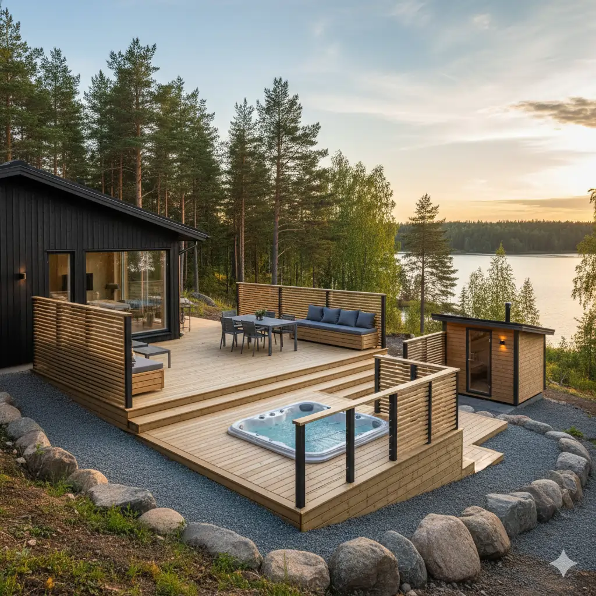
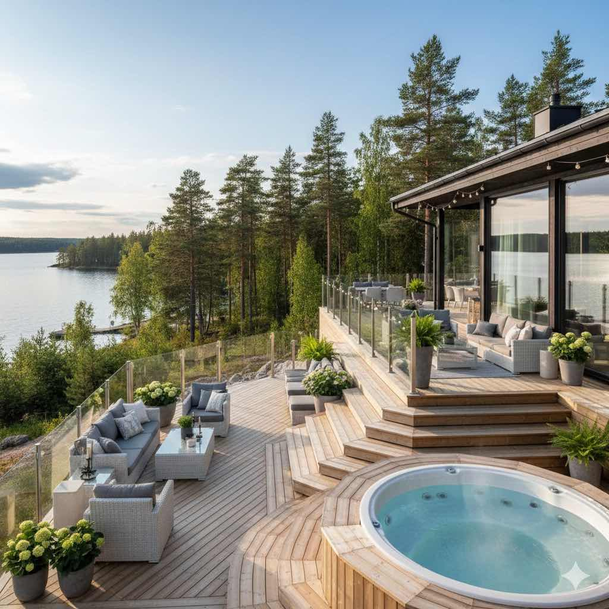
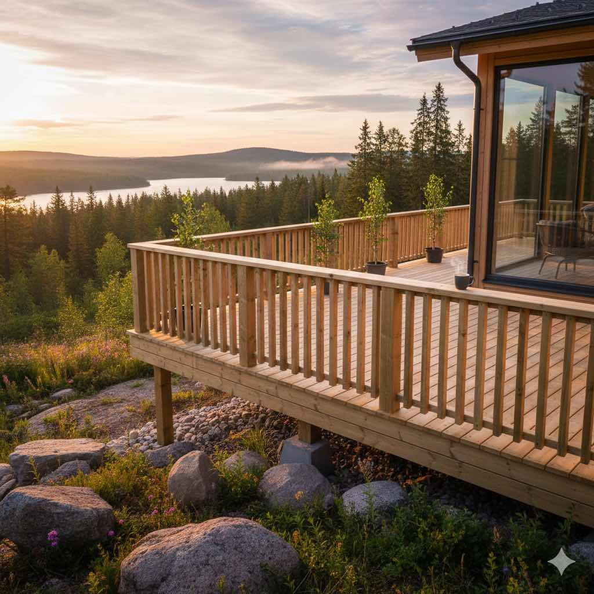
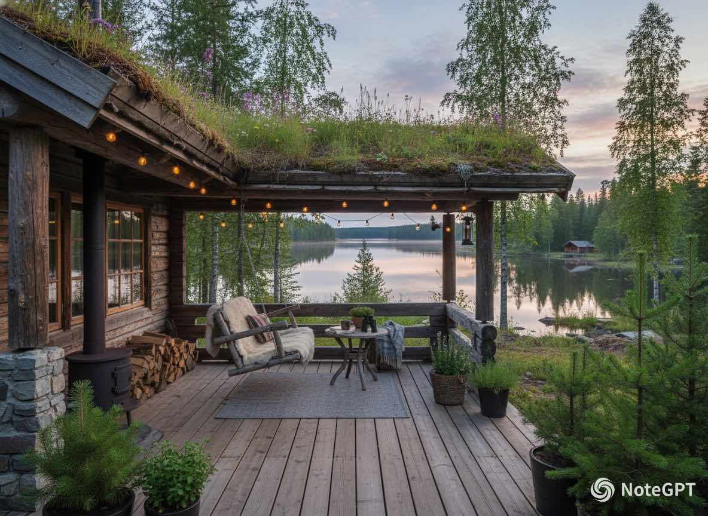
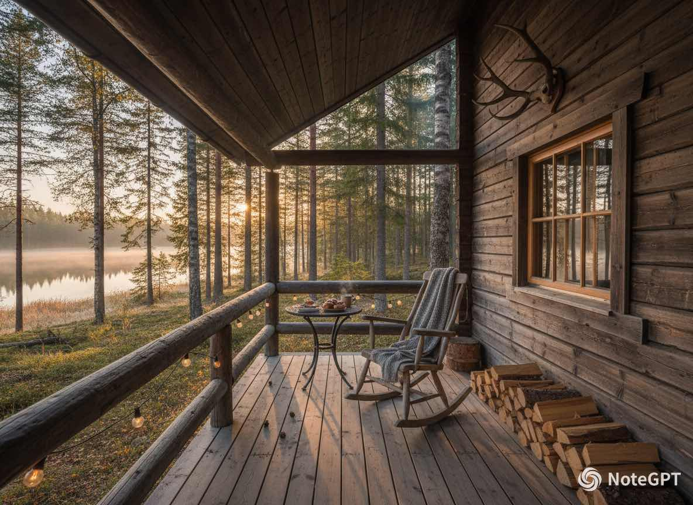

Terassit
Terassin rakentaminen koko Pohjois-Karjalassa - toteutamme toimivat ja kestävät terassit kotiin ja mökille.
Terassin rakentaminen

Terassin rakentaminen on yksi parhaimmista investoinneista omakotitalon tai mökin viihtyvyyteen - se muodostaa jatkeen sisätilasta ulkoilmaan ja luo kesän viettopaikan. Suunnittelemme ja rakennamme terassin, joka sopii juuri sinun tonttiisi, talon tyyliin ja käyttötarpeisiin.
Karelia Ulkorakennus rakentaa laadukkaat puuterassit, jotka kestävät Pohjois-Karjalan vuodenaikojen vaatimukset. Terassi voidaan toteuttaa maatasoon, korotettuna tai monitasoisena ratkaisuna omakotitaloihin, kesämökeille ja rivitalokohteisiin.
Voimme toteuttaa samalla myös terassin portaat, kaiteet, säilytysratkaisut sekä yhteensopivan pergolan. Näin saat yhdellä projektilla valmiin ulkotilan, joka toimii arjessa ja vapaa-ajassa.
Mitä palveluun kuuluu
Kohdekäynti
Käymme pihan läpi paikan päällä ja määrittelemme sopivan ratkaisun.
Suunnittelu
Terassin koko, rakenne ja materiaalit suunnitellaan käyttötarpeen mukaan.
Toteutus
Rakennamme terassin sovitussa aikataulussa ja pidämme työmaan siistinä.
Viimeistely
Lopputulos luovutetaan käyttövalmiina ja huolellisesti viimeisteltynä.
Lisätietoja terassipalvelusta
Terassin rakentaminen kannattaa mitoittaa pihan käyttöön jo alussa: ruokailu-, oleskelu- ja kulkureitit toimivat paremmin, kun perustukset, rungon tuuletus ja vedenpoisto suunnitellaan samalla kokonaisuutena. Vertailemme aina puuterassin ja komposiitin erot huollon, tuntuman ja kustannusten osalta, jotta valinta sopii kohteen käyttöön pitkällä aikavälillä.
Pohjois-Karjalan olosuhteissa terassin pintaturvallisuus, talvikunnossapito ja huoltosuunnitelma vaikuttavat käyttömukavuuteen yllättävän paljon. Toteutamme ratkaisun aina niin, että lumi, sadevesi ja vuodenaikojen vaihtelu huomioidaan jo rakennusvaiheessa. Yhteydenoton jälkeen etenemme selkeästi: kartoitus, suositeltu rakennevaihtoehto, aikataulu ja tarjous.
Kuvagalleria





Terassi Joensuussa
Tilava puuterassi omakotitalon pihalle ympäri vuoden käytettäväksi Joensuun alueella.
Pyydä tarjous terassista
Kerro kohteesi tiedot, niin saat selkeän arvion terassiprojektista.
Ota yhteyttä